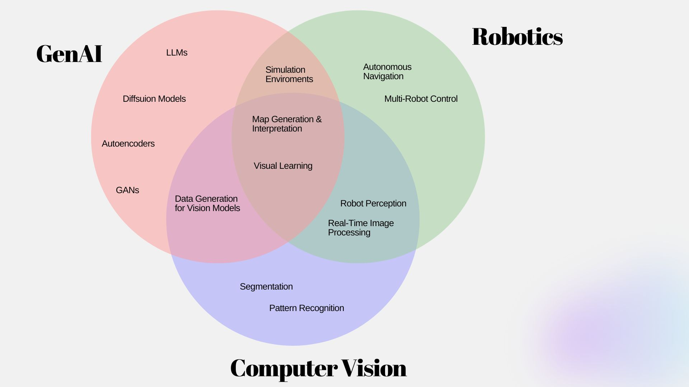
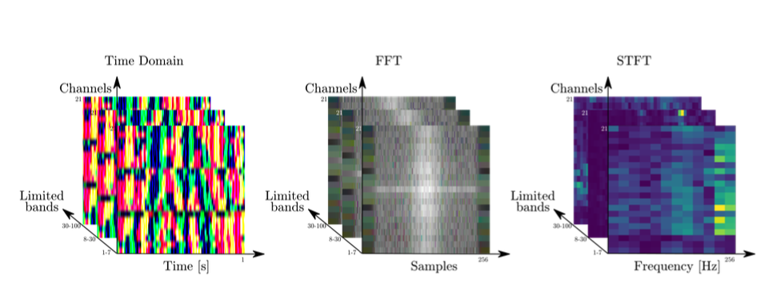
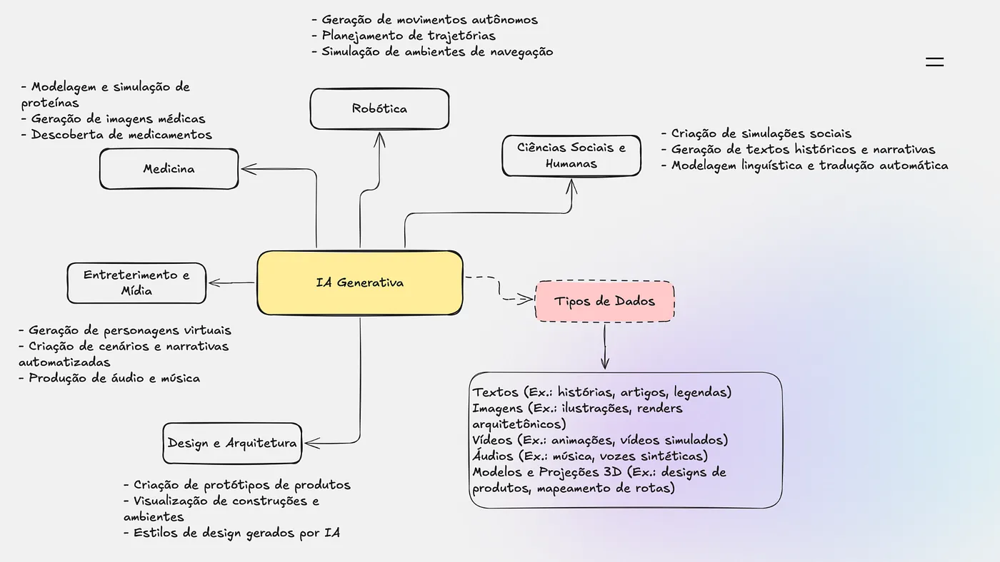
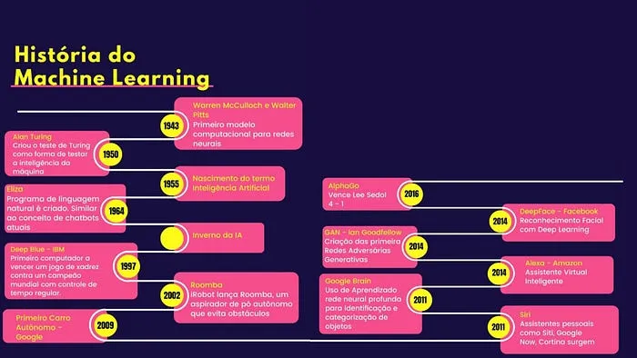

Um pouco sobre mim ...
Me formei em Sistemas de Informação pela UFMG e atualmente estou concluindo minha segunda graduação em Engenharia de Controle e Automação na PUC Minas. Além disso, estou finalizando meu mestrado em Ciência da Computação com ênfase em Inteligência Artificial no Departamento de Ciência da Computação da UFMG.
Minha pesquisa foca no desenvolvimento e análise de dados sintéticos visuais e textuais para apoiar o treinamento de modelos de Inteligência Artificial. Atualmente, trabalho com o Prof. Adriano Veloso.
Meus principais interesses de pesquisa incluem:
- Desenvolvimento e avaliação de dados sintéticos para treinamento de IA.
- Análise do impacto de dados sintéticos visuais e textuais no desempenho dos modelos.
- Aplicações de IA generativa em aprendizado de máquina e aumento de dados (*data augmentation*).
Research Overview
Publicações

Epilepsy Seizure Detection Using Time and Frequency Domain EEG Signal via Convolutional Neural Network
Natalia Espinosa, Clarissa Loures, Rudolf Huebner
Enebi, 2022
Artigos

História da IA Generativa: Como a Inteligência Artificial Aprendeu a "Criar"
Clarissa Loures
Medium, 2024

Explorando o Universo da Inteligência Artificial: Uma Jornada Fascinante
Clarissa Loures
Medium, 2024
Eventos
Talks:
- [2023] Localiza (offlien)- Introdução ao Aprendizado de Máquinas Localiza : Palestra de introdução ao tema para pessoas de diferentes áreas
- [2022] IA Brasil - Introdução a Visão Computacional e Aprendizado de Máquinas na Indústria: Uma análise sobre o uso de imagens para criação de modelos de IA
- [08, 2022] DigitalOkê - Talk sobre visão computacional
- [04, 2022] IEEE WIE UFRB- - Organizando estudos na computação usando Notion
- [11, 2021] Instituto Federal do Ceará - Introdução a Visão Computacional e Aprendizado de Máquinas na Indústria
- [09, 2021] PUC Minas (offline)- - Introdução ao Machine Learning - Visão Computacional
- [08, 2021] PUC SP (offline)- - Machine Learning na Medicina
- [07, 2021] She's Tech 2021 I can't code! Como lidar com a síndrome de impostor na computação
- [11, 2021] Ai Girls Brasil Summit (offline) - Visão Computacional
- [10, 2021] TDC Online - Iniciando uma jornada em visão computacional
- [07, 2020] AI Brasil - Detecção e Reconhecimento Facial: Introdução ao Tema
Workshops & Tutorials:
- Organizer, Programação 101 Workshop 2018 - 2024: Python and C.